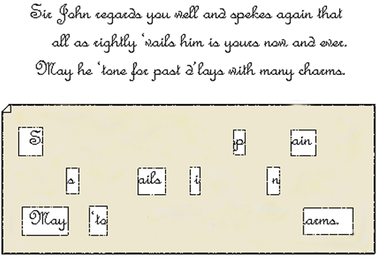
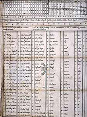
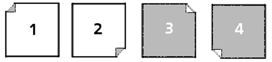

История криптографии
Криптография древнего мира
- Скитала - шифр древней Спарты
- Диск Энея
- Линейка Энея
- Книжный шифр Энея
- Квадрат Полибия
- Шифр Цезаря
Криптография в арабских странах
- С VIII до XV века
- Первое упоминание об „атаке на основе открытого текста“
- Первое упоминание о частотном криптоанализе, таблицы частотности букв арабского языка

Эпоха возрождения (2-я половина XIII века - 1590-е годы)
- Использование криптографии церковью (включала 7 методов скрытия текста), Роджер Бэкон
- 1452 — первая криптографическая организация (Венеция, Италия)
- 1466 – трактат Леона Альберти, описание шифровального диска
- 1469 – шифр „Миланский ключ“
- 1518 – Иоганн Тритемий, „Polygraphia“, полишифры, идея использования биграмм
- 1550 – Джероламо Кардано, решётка, стеганография и транспозиционный шифр 
- 1633 - „Polygraphia nova“ Атанасиус Кирхер, полиглотический код
- 1580 – Френсис Бэкон, двоичный способ кодирования
- 1585 – шифр Виженера, использование другого открытого текста в качестве ключа, пользование результата шифрования в качестве ключа
- 1639 – первое упоминание о рукописи Войнича 
- 1863 год – метод Касиски
- 1883 год - „La Cryptographie Militaire“ Огюста Кергоффса

Первая мировая война (1914 - 1918)
- Криптография как инструмент войны
- Телеграмма Циммермана
Вторая мировая война (1939 - 1945)
- Энигма
- Бюро Шифров
- Блейтчи-парк
- Машина Лоренца, M-94, M-209
- Проект „Венона“ и проект „Манхеттен“
20 век
- 1945 - „Communication Theory of Secrecy Systems“
- 1960 – появление блочных шифров
- 1976 год – официальное принятияе шифра DES в качестве стандарта
- 1976 год - „New Directions in Cryptography“ (Диффи, Хелфман)
- 1977 год – алгоритм RSA (Ривест, Шамир, Адельман)
- 1985 год – криптография на эллиптических кривых (Коблиц, Миллер)
Криптография и государство
- 1997-2000 – Advanced Encryption Standard
- 2000-2001 – New European Schemes for Signatures, Integrity, and Encryptions
- 2000-2002 – Cryptography Research and Evaluation Committees